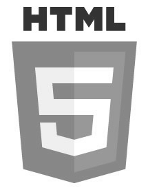
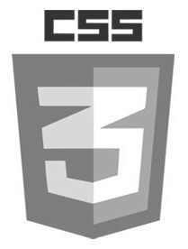
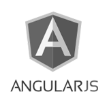
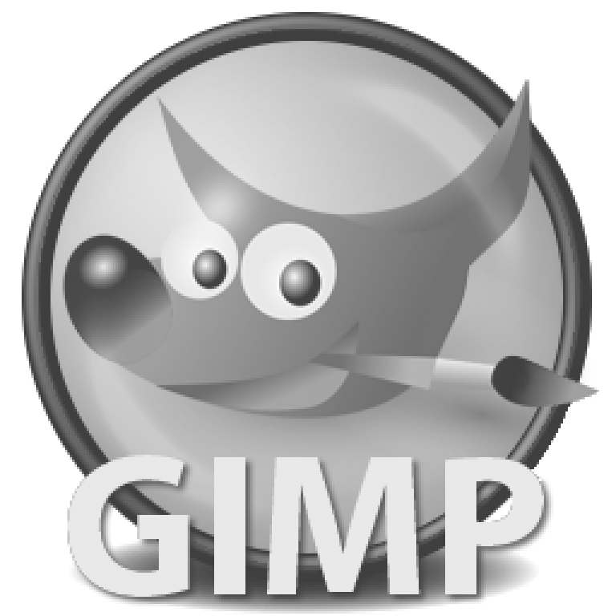

It is important to determine who will be viewing the content so that I can better tailor the design of the website specifically towards what they are looking for. The general demographic for my portfolio will be employers. This demographic can be split up into four main classifications for the purposes of this portfolio. The four classes of employers that my UX/UI portfolio will be targeting are UX/UI designers, graphic designers, front-end developers, and human resource workers. This portfolio will be used for a wide variety of UX/UI job applications and these are the main parties that might engage with my portfolio. It is important to design my portfolio with these four classes in mind.
Personas are fictional people created to represent the various demographics. They can be useful to help guide the planning process and help focus the design towards the best presentation for the types of people who are likely to use your design. The following are a personas to represent the 4 main classes listed above:
Personas
Samantha Collins - UX/UI Designer
Samantha is a 28 year old woman who works at a small digital marketing company in Toronto called ABC Digital Marketing. She is a UX/UI designer and has been working for the same company for the past 5 years. She recently received a promotion and has taken on an intermediate leadership role in her division. The company has taken on a lot of new projects and is backlogged for the next year. They are looking to expand their UX/UI team to help manage the influx of projects. One of Samantha’s new responsibilities is to hire two new junior UX/UI designers. She is nervous about finding new talent and wants to make sure she finds the perfect fit for these job openings. However, she also remembers how difficult it was for her to find her first job and she is open to the idea of offering this opportunity to fresh graduates.
Samantha attended Sheridan/York University for her Bachelors of Design and is very skilled at graphic design, generating flawless user interface designs and layouts. She has proven herself to be quite capable of developing interfaces from a user experience perspective but was not formally trained and has developed her skills on the job over the past 5 years at ABC. She doesn’t think that UX design experience is mandatory to work in these positions but she does see it as a strong asset. The company really needs these new employees to start working right away and so she wants to find candidates that can manage to pick up the job quickly.
Peter Muller - Graphic Designer
Peter is a 37 year old man who is working as a Graphic Designer for a software company called Davis Group based out of Vancouver, BC. Peter has been working for Davis Group for 8 years and this is his 4th job in his field. Peter started out his career providing freelance work to build his portfolio but transitioned to full-time work for software companies 11 years ago. Whenever Davis Group is thinking about hiring new UX/UI designers, they approach Peter to review some of the applications since he has a keen eye for artistic talent. Peter has been consulted before for past applications and all the people he approved have become hard working employees for Davis Group. Peter has high standards when it comes to graphic design and very fine details are important to him.
On his free time, Peter likes to experiment with artistic mediums. He primarily works with hand drawings, paintings, and digital art but has been exploring the use of photography and videography in his work. He keeps his portfolio up to date and has started a blog to document his artistic experimentation.
Joshua Marcos - Front-End Developer
Joshua is a 25 year old male who is the co-founder of Starlite, a software start-up specializing in remote lighting control systems. He is a recent graduate from the University of Toronto and founded Starlite with a few friends from University. They are using a shared working space in downtown Toronto and are working hard to make their company successful. Joshua is also the lead front-end developer and has developed their software interfaces from scratch. Recently, Starlite has launched their first product and have gotten significant funding and support from interested investors. Some feedback they have received is that their application interface is a little difficult to use on hand-held devices. Joshua and his partners have decided that a UX/UI designer would help identify problem areas and improve user interaction with their mobile website. Joshua is also the only one on the team that knows how to develop front-end material and he is looking for someone to help him manage the workload. He is using HTML5, CSS3, and Angular JS to develop his interfaces and wants to have somebody who is familiar with these tools.
Joshua believes that a start up company needs to have employees on the cutting edge of their field and he only wants to surround himself with the best of the best. He also wants to make sure that he is compatible with the people he works with, so their personality and work style is very important to him. A resume shows people’s qualifications and work history but he prefers to meet with people in person to learn more about them in an informal setting.
Beth Ridgley - Human Resources
Beth is a 41 year old woman who is working in the human resources department of ASD Corp., a large international corporation. She has been working for ASD corp. for the past 19 years and is a loyal and hard working employee. She was hired with a high school diploma and was originally in charge of reviewing incoming applications. In order to move up in the company, Beth returned to college part-time and got a diploma in office administration and accounting. Presently, Beth is the head of the human resources department and manages the entire interview process.
She is the first line of contact for new job postings and handles initial phone interviews personally. She does not have technical knowledge for the positions that she is interviewing for and she only has the information that the various departments give her for new career openings. When reviewing applications, Beth looks for buzzwords and specific skills that match the description given to her. As the head of the department, Beth is very busy managing her HR team, processing new hires, and leading HR related presentations in the office. She does not have the time to research applicants in depth and often takes first impressions to form her decisions. She also delegates work to her staff and trusts them to fill her in on potential applicants when she can not review the content herself.
Creating a mission statement helps create a clear and concise message about what exactly the focus and attention of the project is going to be. It helps outline the end goal and what is considered a successful product. A good mission statement gives you a framework for evaluating opportunities and deciding if they fit the core model of your design. The mission statement for the creation of this portfolio is as follows:
"To create a portfolio that demonstrates my UX/UI expertise in an interesting, informative, and interactive way. Providing potential employers with the highlights of my UX process and graphic design potential while presenting myself as cutting edge, professional, and creative."
After determining the demographic and setting a mission statement, the next step is to determine how best to communicate our message to our viewers. Various communication methods were brain stormed and analyzed using a weight decision matrix below. These options were compared against one another using 5 different factors and each factor was given a weight for it’s priority in relation to the rest. The 4 options that were evaluated were:
The following table is the decision matrix showing that the website portfolio option was the preferred choice.
| Factors | Weight | Options | |||
| Option 1 | Option 2 | Option 3 | Option 4 | ||
| Quantity of Work | 0.2 | 2 | 2 | 4 | 3 |
| Quality of Work | 0.3 | 2 | 2 | 4 | 3 |
| Creativity | 0.2 | 1 | 1 | 5 | 3 |
| Production Time | 0.1 | 5 | 4 | 1 | 2 |
| Cost | 0.2 | 5 | 5 | 4 | 4 |
| Total | 1.00 | 2.7 | 2.6 | 3.9 | 3.1 |
A Brand is the known identity of a company or individual. For the purposes of this project, a brand is what guides both the subtle or overt statements that portray my identity. In my mission statement, I mention that I want to be perceived as cutting edge, professional, and creative. These messages were considered when crafting my aesthetic. Two examples of where my brand influenced my design choices can be seen in the font and the logo.
Font
Choosing font styles for my website is important for keeping with the overall aesthetic I wish to acheive. I have choosen to primarily use sans-serif fonts for my website since sans-serif fonts are often seen as more modern, clean, and creative. These fonts are very common amongst flat design and this will make sure that my design keeps up with modern trends.
Logo
Creating a logo that fits with my aesthtic is important to maintain consistency throughout my website. When designing my logo, multiple different sketches were created and a few were selected to be drafted in Gimp. My gallery shows some of the collection of logo prototypes that were created in Gimp. The selected logo seen above the navigation bar at the top of the page was selected as the final design because it is remincient of modern flat design while displaying a simplistic, clean, and professional image.
Implementing the design starts off the iterative design process. This step is where production of multiple levels of prototypes are created. Multiple iterations (increasing in complexity each time) are constructed with each prototypye building upon the design from the previous. In this case, 3 iterations are currently completed which include a simple wireframe, a photoshop mockup, and a detailed website prototype
Iteration 1) Axure Wireframe
The first iteration was created in Axure and was used to show the initial wireframe design for the website. The following are a few screenshots of the axure files:
Iteration 2) Photoshop Mockups
The second iteration was created in photoshop and was used to show a more detailed layout for the website. New features were added such as the gallery page and the links to Facebook and Linkedin. The following are a few screenshots of the photoshop mockups:
Iteration 3) Detailed Prototype
The third iteration is the currently implemented website. Please explore the website to review the content. This website was produced using the following tools:
   Testing and analysis is needed to improve the design in future iterations. Each iterative cycle includes these steps but to varying degrees. Early stage prototypes like wireframes and mockups might not need intense usability testing. These early stages often consist of a lot of quick informal testing. As the protypes become more high level and intriquite, more formal testing might need to be conducted.
Informal Testing
For the first two iterations of this website (the wireframe and photoshop mockup) informal testing was conducted on the design. In the first iteration, the personas developed in step 1 were used to test the design. I went through the design as if each persona were to navigate the site, and identified problem areas or missing information that each persona would notice. In the second iteration the design became more complex and so I asked friends and family to review my photoshop mockup. Using their feedback and comments, a new design was drafted as the preliminary website.
Detailed Usability Testing
The third iteration is a very detailed preliminary website and therefore informal testing and analysis is not adequate to assess this higher level prototype. Detailed usability testing will be conducted in the following weeks.The testing will occur by collecting a sample group and asking each participant to run through various scenerios. Each participant will also be allowed to tour the site uninhibited. After each participant has completed the tasks, they will be asked to fill out a SUS questionnaire (System Usability Scale) and asked a series of long answer usability questions.
{kind=link}
{kind=link}
{kind=link}
{kind=link}